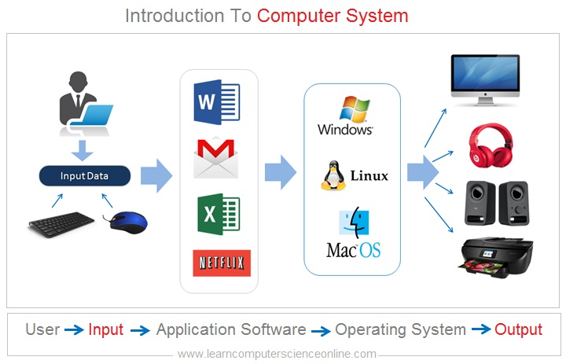

CHAPTER 1: INTRODUCTION TO COMPUTING
In this lesson, I learned that computing is the use of computers to solve problems or complete tasks, ranging from simple operations like using a calculator to advanced activities like creating algorithms for machine learning. At its core, computing involves processing various types of information, including numbers, text, and images, using machines. Computers serve as programmable devices capable of storing, retrieving, and analyzing data, as well as generating new information like text or images. Historically, the term "computer" referred to humans who performed calculations manually, but it later evolved to describe mechanical devices, eventually becoming the electronic systems we use today.
CHAPTER 2: PROFESSIONS & CAREERS IN COMPUTING
I learned that computers are essential to modern life, with applications constantly expanding across various fields. Their use is widespread in academia, research, industry, government, and private organizations. As computers become more integrated into daily activities, career opportunities in computing continue to grow, offering diverse paths for professionals in the field.
These categories highlight the broad opportunities available to graduates of computer-related courses. As technology evolves, so too will these career paths, ensuring that computing professionals play a vital role in shaping the future of industries and society.

CHAPTER 3: INFORMATION PROCESSING CYCLE
In this lesson, I learned that the information processing cycle involves four key stages: input, processing, storage, and output. Input includes acquiring, entering, and validating data, while output involves generating reports or interactive queries. Data processing, a critical part of this cycle, involves sorting, filtering, and merging data from various sources to create new datasets. These datasets undergo further analysis to support decision-making processes. Depending on its purpose, the processed information may be stored temporarily or permanently for future use. Overall, the information processing cycle ensures efficient data handling to facilitate informed decisions in various fields.
CHAPTER 4:INTRODUCTION TO COMPUTER SYSTEM
I learned that a computer system is the systematic interaction between entities, processes, and operations through an electronic device known as the computer. A computer system consists of four key components designed to work together. Hardware refers to the physical parts of the computer, such as processors and storage devices. Software includes the programs and instructions that control the hardware. Peopleware represents the users and operators who interact with the system. Dataware comprises the information processed and stored by the computer. Together, these components ensure the efficient functioning of the computer system for various tasks.